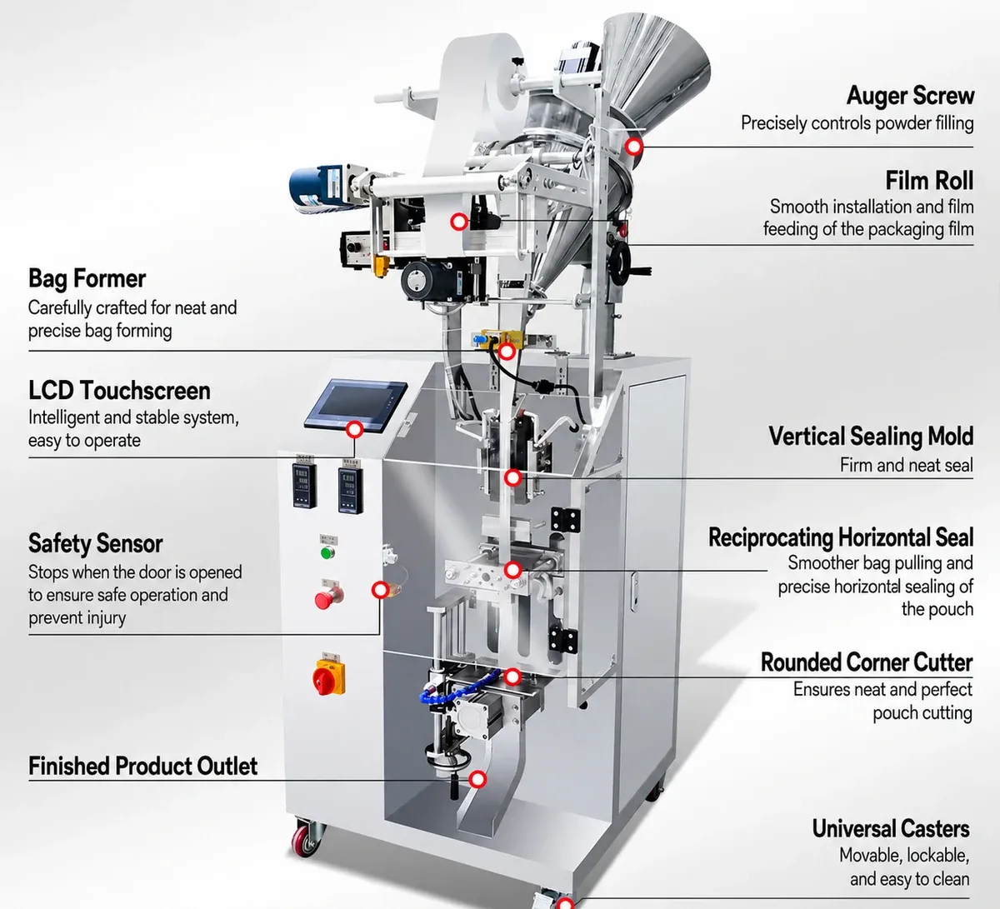
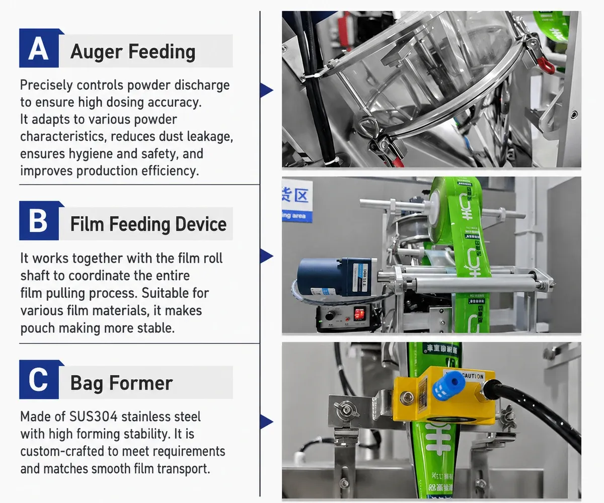
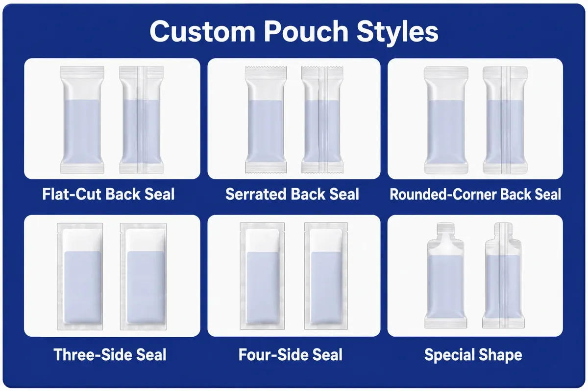
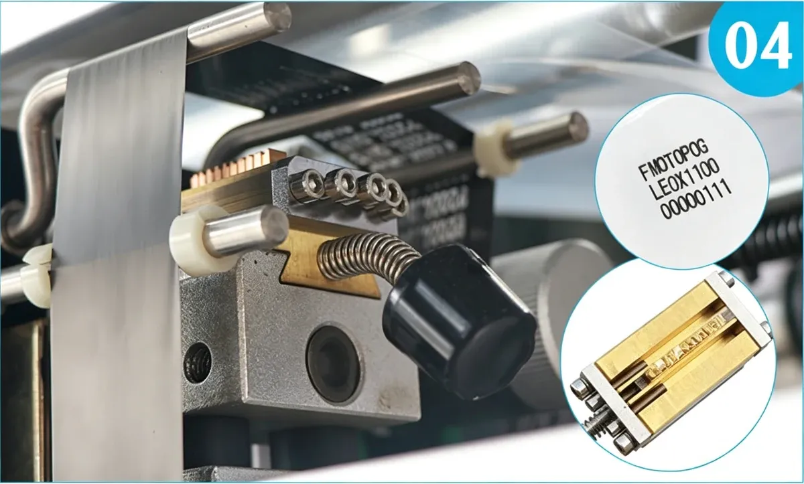
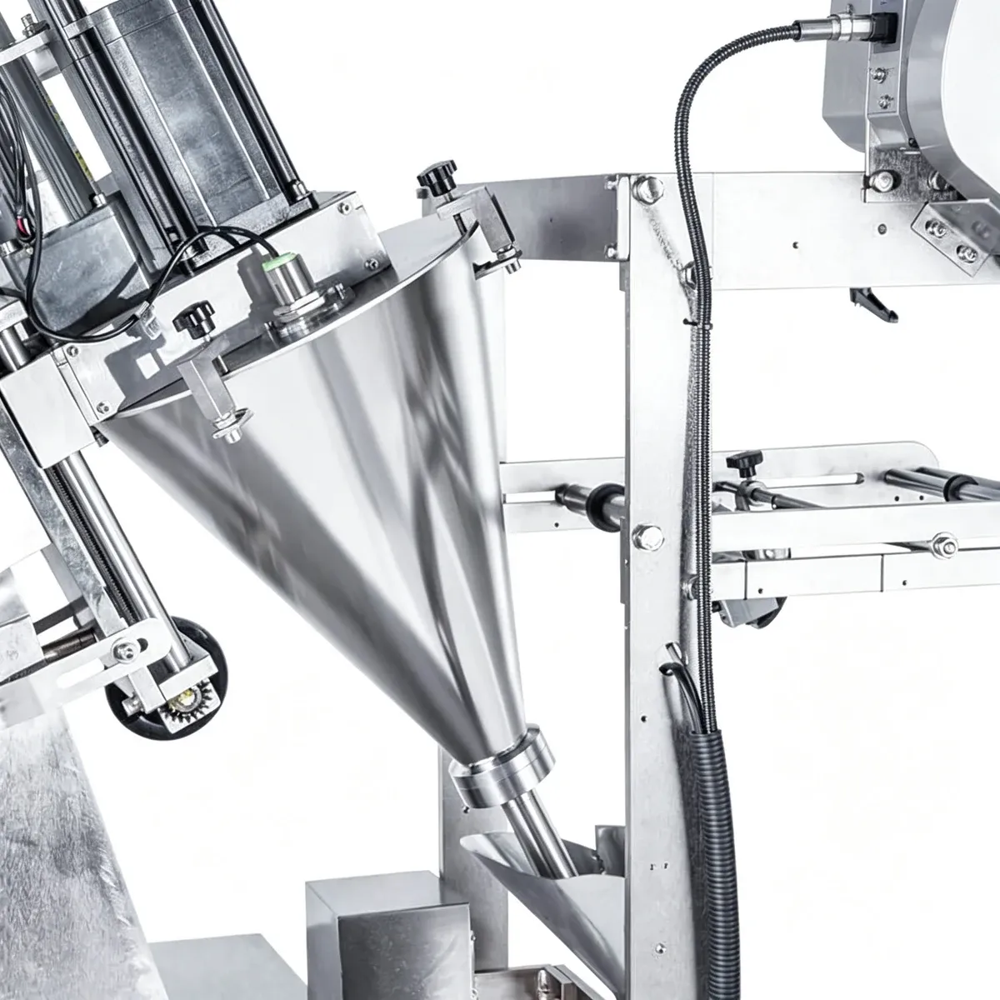
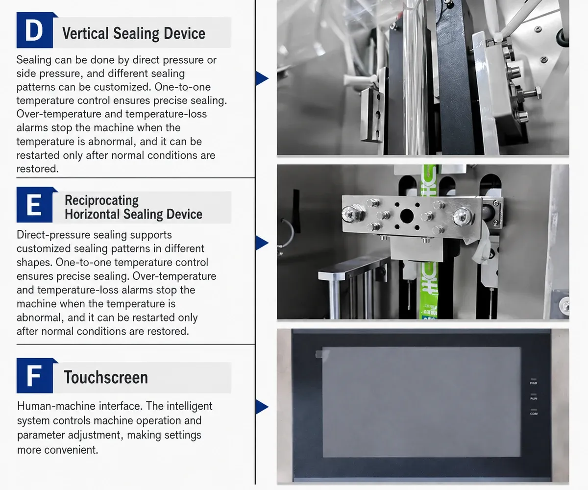

01
Food & Beverage Powders
Coffee powder, milk powder, beverage powder, spice powder and seasoning powder.
SACHET PACKAGING MACHINES
Automatic Powder Filling and Sachet Sealing Machine for Coffee, Milk Powder and Fine Powders
Note: Technical specifications are for reference. Actual machine performance may vary depending on the powder, filling quantity, bag size and selected configuration.
The PBF-380 Automatic Auger Powder Sachet Packing Machine is designed for automatic packaging of dry and fine powder products into small bags or stick-style sachets.
The machine integrates powder feeding, auger dosing, bag forming, filling, heat sealing, cutting and optional coding into one continuous packaging process.

It is suitable for products such as coffee powder, milk powder, spices and other powdered materials where controlled dosing and reliable sealing are required.
With a standard filling range of 1–350 g and production speed of approximately 20–60 bags per minute, the PBF-380 provides a flexible solution for medium-output powder packaging applications.

The PBF-380 can be used for various dry powder products. The final auger and filling configuration should be selected according to product characteristics such as bulk density, particle size, flowability, moisture content and required filling weight.
The machine forms bags automatically from roll film. Optional features such as tear notch can also be added according to packaging requirements.

PBF-380
Coffee powder, milk powder, beverage powder, spice powder and seasoning powder.
Nutritional powders, supplement powders and similar dry powder products.
Compatible pharmaceutical powders when the required hygiene and material specifications are confirmed.
Selected dry chemical powders according to product characteristics.
PBF-380
Back Seal
Three-Side Seal
Four-Side Seal
Small Powder Bags
Stick-Style Sachets
PBF-380
The PBF-380 uses an auger screw to control powder filling. The screw specification can be customized according to different filling volumes and powder characteristics. An internal agitator helps maintain smoother powder flow and reduces the risk of inconsistent feeding.
The standard filling range is approximately 1–350 g. This makes the machine suitable for both small sachets and relatively larger powder packages. Different auger sizes can be selected for different target filling weights.
The machine automatically forms bags from roll film and completes bag forming, powder filling, heat sealing and cutting. This reduces manual packaging steps and supports continuous production.
The operation panel allows operators to adjust key production settings such as filling weight, bag length, packaging speed and other machine parameters. This simplifies product changeover and daily operation.
The bag forming and sealing structure provides controlled heat sealing to help reduce powder leakage and package contamination. The sealing configuration can be selected according to the required bag style.
The PBF-380 can be configured for back sealing, three-side sealing and four-side sealing. This allows the machine to support different packaging appearances and product applications.
The machine can be configured with a nitrogen filling function. Nitrogen can be introduced into the package before final sealing to help protect suitable products from oxidation and improve package preservation conditions.
An automatic screw feeding system can be added for continuous powder supply. Optional coding equipment can print production date, batch number, shelf life and other required package information directly into the packaging process.
Powder is supplied to the filling hopper manually or through an optional screw feeder. The auger dosing system measures the required amount of powder according to preset filling parameters.
Optional coding equipment can print production information onto the package during operation.

Powder Feeding
Auger Dosing
Film Feeding
Bag Forming
Powder Filling
Sealing
Cutting
Finished Sachet Output
The auger filling unit controls powder discharge through screw rotation. An agitator inside the hopper helps keep the powder moving toward the screw and supports more stable filling. Different auger screws can be supplied for different filling ranges.
Fine powders do not always flow evenly through gravity-based filling systems. An auger screw provides controlled material movement and is especially suitable for powders that require repeatable dosing. The hopper agitator also helps maintain material flow toward the filling screw.

PBF-380
For this reason, product samples are recommended when specific filling performance is required.
The machine is compatible with several heat-sealable film structures, including OPP/CPP, OPP/PE, NY/PE, PE and other compatible laminated films.
The bag forming and sealing structure provides controlled heat sealing to help reduce powder leakage and package contamination. The final film specification should be confirmed before machine production.

PBF-380
What's included: main VFFS packaging machine, auger powder filling system, powder hopper with agitator, film feeding system, bag forming structure, heat sealing system, bag cutting unit, touchscreen operation panel, SUS304 machine structure.
An automatic screw feeding system can be added for continuous powder supply. The feeder helps maintain a stable material level in the filling hopper and reduces manual loading frequency.
Nitrogen can be introduced into the package before final sealing to help protect suitable products from oxidation and improve package preservation conditions.
Optional coding equipment can print production date, batch number, shelf life and other required package information.
A tear notch structure can be added to make finished sachets easier for consumers to open.
Three-side seal configuration for a different packaging appearance.
Four-side seal configuration for a different packaging appearance.
Different auger screws can be supplied for different filling ranges.
The filling range can be customized according to the target filling weight.
The bag former can be customized to meet specific bag size requirements.
Watch the PBF-380 automatic auger powder sachet packing machine in operation.
PBF-380
PBF-380
Share your powder type, filling weight, sachet dimensions and target speed. PACKGENIX can review the material and packaging requirements and recommend the appropriate auger, bag format and optional configuration.